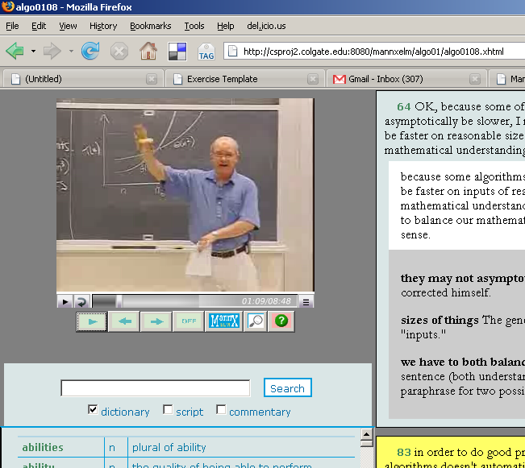
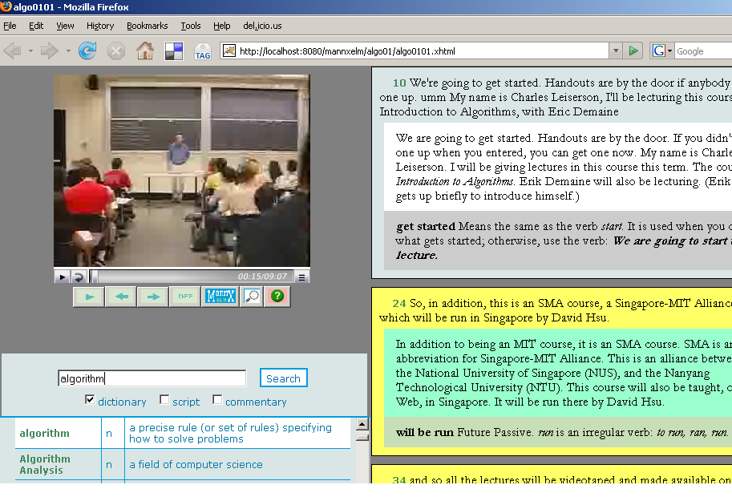
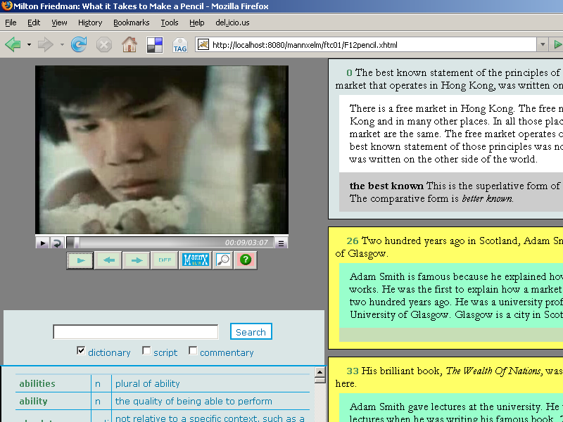
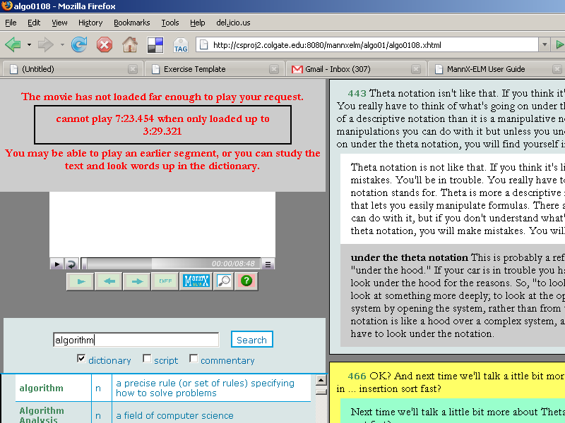
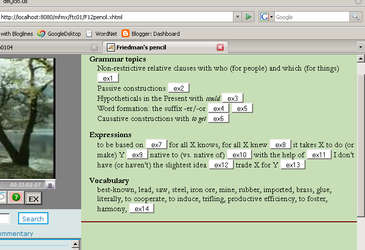
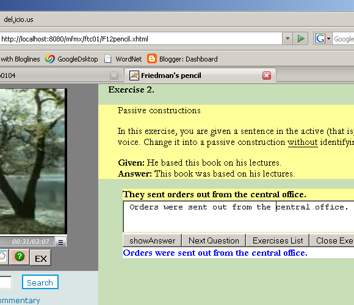

Advanced English Cources
English Courses and MannX
This is the home page for two advanced English courses. One course is for Computer Science students (the CS button above). The other course is for students of Economics (the Econ button above). Both courses use the program called.MannX (Multimedia Annotator - XML)
MannX is a program for working with digital video and related texts: transcripts, commentaries, and dictionaries. MannX makes it possible for even beginning language students to work with video in English.
Quick Start
A MannX course consists of units or lessons. If you have Firefox browser 1.5 or later with the Flash Plugin 8 or later, you can click on a course button, select a unit, and start working. This screenshot shows a unit page with video, text, two commentaries and a dictionary.

If you would like more information, look through the Installation and Interface section below. This page can serve as a short User Guide.
Installation Instructions
There are three ways to use MannX: as a desktop application; as a Web application over the Internet; and as an Off-Line Web Application (OWA). Each way has its advantages and disadvantages, but OWA is probably the best for most users.
General Browser Requirement
In order to use MannX, you need the Firefox browser (version 1.5 or later) with the Flash Plugin, version 8 or later. Both are free, and Firefox is Open Source. Firefox can be downloaded from Mozilla.org, where you also find installation instructions. There is a page for downloading the Windows US-Englsih version, and a page for all available languages and platforms. Once it is installed and started, you can download the Flash plugin from the Plug-in section of the general Add-ons page.
Web Application
In order to use MannX over the web, you only need the general requirement above AND a high-speed Internet connection. Once you have downloaded and installed the browser and the plugin, you can start using MannX materials from this website:
http://csproj2.colgate.edu:8080/KUEnglish
Copying the Materials to Your Computer
If you use MannX locally, as a desktop application or an Off-Line Web application, you have to install the MannX materials themselves, either from a CDROM or from the Web. Installing the MannX materials simply means copying two directories, one with all the textual materials, the other with the videos. The videos directory must be called "movies." The other directory can be given any name but it has to be placed next to the movies directory. (We call it mfmx, which stands for "MicroFormat MannX" but you can give it a better name.) If you use MannX as a local application, the two directories can go anywhere on your hard drive. If you are using an OWA, the two directories have to go to a specific place on your hard drive, as explained in the OWA section below.
Local Desktop Application
To use MannX as a local application, you need general requirement above. If you do not have an Internet connection, we can provide all the installers on a CDROM, together with the MannX materials themselves. In addition, you have to create a short text file in the FlashPlayerTrust directory on your computer. On Windows XP, this directory is:
C:\WINDOWS\SYSTEM32\Macromed\Flash\FlashPlayerTrust
On the Mac, it is similar to:
/Library/Application Support/Macromedia/FlashPlayerTrust
On Linux, it can be in an individual user directory:
/home/<user>/.macromedia/Flash_Player/#Security/FlashPlayerTrust
or for all users:
/etc/adobe/FlashPlayerTrust/
See this very helpful page for more details. The trust file itself is a text file with the.cfg extension that contains the path of trusted SWF files or directories on separate lines, for example:
C:\Program Files\myapps\FlashApps
/home/apps/FlashApps
/home/myFlashApp/app.swf
Off-Line Web application
For Authoring, MannX needs a web server on your computer, such as Apache Tomcat. We recommend Apache Tomcat because it supports Java code that we have been developing. which requires the Java Runtime Environment (JRE) installed on your computer. If you have JRE version 1.5 or later and Tomcat version 5 or later, you need no further installation.
Both Tomcat and JRE are free. The installers can be downloaded from the Internet, and are also included on the CDROM. After the installers have been downloaded, proceed as follows:
- Install Java by running the installer. This will also install a Java plugin for your Firefox browser.
- Install Tomcat by running the installer. Accept all defaults.
- Copy from the CDROM or download from the Web all the movies.
- Place the movies into the
moviesdirectory in the Tomcatwebappsdirectory (On Windows, it will be similar to
C:\Program Files\Apache Software Foundation\apache-tomcat-6.0.10\webapps\
except the version number may be different from 6.0.10). - Copy from the CDROM or download from the web all the texts and software. Unzip into the same webapps directory.
You can now open the MannX demo page by using this link:
http://localhost:8080/KUEnglish
Note: It may happen that an upgrade to the Firefox browser will require an upgrade to its Java plugin. If that happens (and it has happened once in the last two years), you will need to uninstall your JRE and install a fresh one.
The problem of editing and saving local files from within the browser is under active development. Especially notable is the Google Gears project. It is possible, indeed likely, that MannX will be using Google Gears as soon as it is released for use in applications.
Opening a Unit in MannX Player
The best way to open a unit in the MannX Player is from the course syllabus page:
- If you are using MannX as a desktop application, open the KUEnglish directory, click on the index.html page, select a course and click the Syll button..
- If you are using MannX as an offline web application, use the link in the preceding section, select a course and click the Syll button.
- If you are using MannX over the Web, go to http://csproj2.colgate.edu:8080/KUEnglish., , select a course and click the Syll button
The MannX Screen
The MannX screen consists of three main panels. In one common arrangement, the movie is in the top-left quater of the screen, the dictionary is on the bottom left, underneath the movie, and the texts occupy the right half of the screen. (The dictionary controls at the top can also be used for search through the texts of the unit, see the section of dictionary lookup and search.)
Normally, you will want to expand the browser window to its maximal size. In the unlikely event that video control buttons overlap with dictionary controls, try closing one or two toolbars.
Example: Three panels, CS lecture, Text on right
This example shows an excerpt from a lecture in the MIT introductory course on Algorithm Analysis.

Each segment consists of the transcript of the video segment and two commentaries. The first commenary shows a paraphrase of the transcript, in simpler and grammatically correct language. (The transcript contains many, typical features of spoken language, such as false starts, interruptions, digressions, filler words, and so on.) The second commentary provides explanations of grammar, vocabulary and usage. The currently selected segment has a gray-blue background, others have yellow background.
You can also arrange the movie and the dictionary share the top half of the screen and the texts occupy the bottom half. This arrangement is useful if your text consists of long lines that you do not want to be wrapped around. It is appropriate for interlinear glosses used in documentary linguistics.
Example: Three panels, Economics text, Simple English paraphrase, Exercise Link
This three-panel example shows an excerpt from a popular TV series on Economics, Free to Choose, by Dr.Milton Friedman.

As in the previous example, the commentary on each segment consists of two parts. The first part shows the text of the segment broken into simple sentences. (Dr.Friedman speaks in grammatical but quite complex English.) The second part contains explanations of grammar, vocabulary and usage.
Through simple customizations, you can control:
- how the panels are arranged;
- how much text shows in the text panel. The screenshot above shows a transcript and two commentaries. You can hide either or both of the commentaries.
- whether text lines are wrapped or not.
Web Application Screen: Waiting for Video Download
If you use MannX as a Web application, it may happen that you will try to play a segment before that segment has been downloaded from the server. The next screenshot shows what happens in this situation:

As you can see, the user selected and tried to play the segment that starts within second 443, or at 7 minutes and 23 seconds. The movie has not yet loaded to that point. The message continuously updates the counter that shows how much of the movie has been loaded. You can wait till the counter reaches the time of your selected segment while using the dictionary and reading the text and the comments. Alternatively, you can select an earlier segment that has already beendownloaded; or you can click on the darker part of the video bar that corresponds to the downloaded part of the video and study that segment.
The Central Concept: text/video segment
The central concept of MannX is the text/video segment. The video clip of a MannX lesson is divided into segments, usually a couple of seconds long and corresponding to a linguistic unit, such as a sentence or an exchange in a dialog. The script is divided into matching segments, and the two sequences of segments - video and textual - are linked: if you select a text segment MannX can easily find the matching video segment, and the other way around. As a result, the student can play the same segment many times while reading its text and comments linked to that text.
The usual way to go through a lesson is to work through the segments in order until the text, the sound, the vocabulary and the grammar of each segment are completely understood. In the end, you have the satisfaction of playing the entire clip (usually a few minutes long) and enjoying it as a movie.
Setting the Current Selection
There are three ways to set the current selection. (See also the table of buttons below.)
- Click anywhere in the text. The segment that contains the location of the click will be selected.
- Click Next or Previous button. The next or previous segment will be selected. In the beginning, clicking Next selects the first segment. (Note: clicking on Next or Previous button while holding the Control key down with take you to the Next or Previous unit, respectively.)
- Click some point on the movie's control bar or drag its slider to that point. The video segment containing the point will be selected; the script and the commentary window will be scrolled to show the current selection
MannX User Interface
Most user interactions with the program use the row of buttons in the movie panel. They control the movie, dictionary, and grammar. The movie's control bar is also available, for additional video navigation and playback. Our buttons are as follows:
| Button | Description |
|---|---|
|
|
Play. If you have not selected a sequence to play, this button will play the entire clip. |
|
|
Stop button toggles with Play; use it to stop the movie in the middle of current selection. |
| The Next button selects the next segment. If the Off/On toggle is On, the segment will play automatically; otherwise you have to click Play. | |
| The Previous button selects the previous segment. If the Off/On toggle is On, the segment will play automatically; otherwise you have to click Play. | |
| The Exercises button, if present, opens a panel in which you can do self-test exercises. | |
| When the On button is showing, setting a current selection will result in the movie sequence being played immediately. The on button toggles with off. | |
 |
When the Off button is showing, you have to click Play to play the current selection. This gives you a chance to pause and think and use the dictionary and grammar. |
| The MannX logo button takes you to the course home page. Clicking on the same button on the course home page takes you to the home page for the entire site. | |
| The Search button will take you to the search page for the entire course. You can search through both text and commentaries. The result of a search is a list of links to segments from different lessons; clicking on a link will play the segment for you. | |
| The help button will open this document for you. |
Using the Dictionary
As you can see from the screenshots in the MannX Screen section, the dictionary panel has three checkboxes in it, labeled Dictionary, Script and Commentary. This indicates that you can use the same text input either to look up a word in the dictionary or to search for it in the text or commentaries. There are four possibilities: dictionary checked (for lookup); text checked, commentary checked, or both checked (for search).
To look up a word either in the text or commentaries, hold Control key down and double-click on that word. Alternatively, you can type a word or a phrase in the text box above the dictionary and click the SEARCH button.
To search for a word or phrase, check text or commentary or both, type the word or phrase into the text box and click SEARCH. Clicking SEARCH again will cycle through the occurrences of the word/phrase in the text. You can search for specific text strings (words or phrases) or for regulare expressions. If you are not familiar with regular expressions, simply ignore this remark or look them up in Wikipedia and use references there to learn more.
The structure of a dictionary entry
A dictionary entry is a row in the dictionary table that consists of three cells. The first cell gives has the English word of phrase, the second cell gives its part of speech, and the third cell porvides a definition in English or a gloss in a language other than English.
Exercises
If a course has exercises in it (e.g., Free to Choose), then the row of buttons in the movie panel has an EX button. Clicking on it, opens the exercise panel. Initially it contains a summary of the grammatical and lexical material for the unit, with links to exercises.

Clicking on an exercise link displays an exercise. Each exercise consists of an explanation (preamble) followed by questions. The explanation usually contains a pattern to follow. You see one question at a time. Underneath each question is a text area to type in your answer. The buttons are self-expanatory. The exercises are strictly for self-study: there is no mechanism in this version to submit an exercise for review by an instructor.
